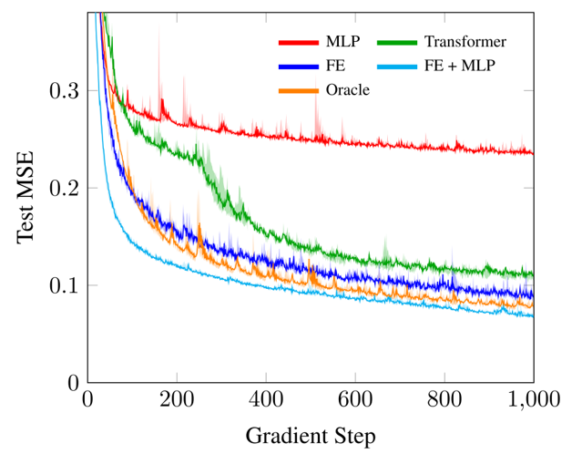

Although reinforcement learning (RL) can solve many challenging sequential decision making problems, achieving zero-shot transfer across related tasks remains a challenge. The difficulty lies in finding a good representation for the current task so that the agent understands how it relates to previously seen tasks. To achieve zeroshot transfer, we introduce the function encoder, a representation learning algorithm which represents a function as a weighted combination of learned, non-linear basis functions. By using a function encoder to represent the reward function or the transition function, the agent has information on how the current task relates to previously seen tasks via a coherent vector representation. Thus, the agent is able to achieve transfer between related tasks at run time with no additional training. We demonstrate state-of-theart data efficiency, asymptotic performance, and training stability in three RL fields by augmenting basic RL algorithms with a function encoder task representation.
The goal of this paper is to represent functions from an arbitrary function space, so that this representation can be used for downstream tasks such as reinforcement learning. Naturally, functions are well-represented by their coefficients with respect to a given basis. However, many practical function spaces are high-dimensional, and so not amenable to classic basis functions such as Fourier series. Therefore, we aim to find basis functions for arbitrary function spaces from data. We introduce the function encoder, a algorithm which learns basis functions from data using a neural network.

This video demonstrates the function encoder algorithm applied to the space of quadratic functions. Initially, the basis functions are random, and the randomly sampled quadratic functions (bottom) are poorly approximated. However, as training progresses, the basis functions converge and this approximation becomes more and more accurate. Furthermore, we can use the same basis functions to extrapolate to out-of-distribution functions not seen during training. Due to the nature of basis functions, these out-of-distribution quadratics are still well represented as they lie within the span of the basis functions. By construction, a function's representation, i.e. its coefficients with respect to the basis functions, is fully informative and linear. This property makes function encoder representations great for downstream tasks such as reinforcement learning.
To demonstrate the efficacy of this approach, we first show that the function encoder can learn complex function spaces. We consider a modified version of the MuJoCo Half Cheetah environment where the lengths of the limbs and the control authority are varied ceach episode. These hidden-parameters affect the system dynamics. The goal is to predict the dynamics given a small online dataset, but without direct knowledge of the hidden parameters.
We compare the function encoder against a transformer, which can incorporate the online dataset as input to the encoder side of the transformer. The function encoder outperforms the transformer in terms of data efficiency and asymptotic performance. We additionally compare against an oracle, which has access to the hidden parameters as an additional input. Interestingly, a variant of the function encoder even outperforms the oracle, which suggests the function encoder's inductive bias is great for this type of transfer.
Each axis of this plot shows a change in hidden parameter. The colors represent the cosine similarity between the dynamics representations of two different hidden parameter values. The figure shows that the function encoder's representation is smooth with respect to a change in hidden parameters. This suggests this representation is easy to work with for downstream tasks.
BibTex Code Here